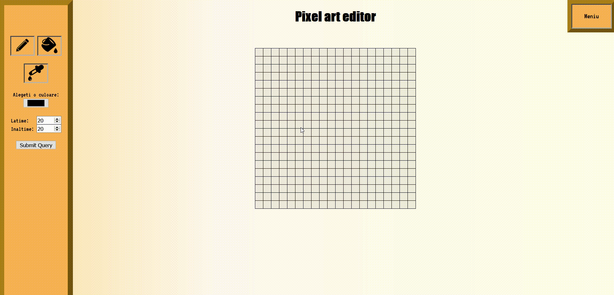
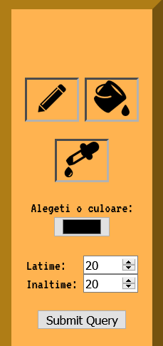
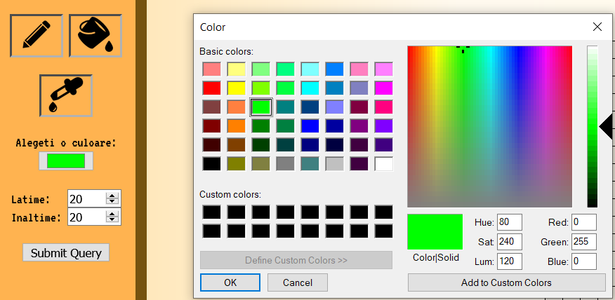

Despre Pixel Art Editor
Este un editor orientat artei de colorare a fiecarei celule al grilajului. Atat prin utilizarea ustensilelor, cat si prin gestionarea spatiului alocat limitat, utilizatorul poate creea o forma minimalista de arta, dar expresiva.
Sidebar
Sidebar-ul, aflat in partea stanga a ecranului, prezinta urmatoarele feature-uri:
- Panoul cu ustensile
- Color picker
- Optiunile pentru generarea grilajului
Panoul cu ustensile
Este alcatuit din Creion, Galeata si Pipeta.
Creion
- Coloreaza cate o celula printr-un click asupra ei sau prin tinerea apasat a Left-Click pe grilaj.
- Pentru a sterge culoarea dintr-o celula se apasa sau se tine apasat Right-Click pe grilaj.
Galeata
- Coloreaza suprafata de aceeasi culoare a celulei pe care a selectat-o utilizatorul cu noua culoare aleasa.
- Coloreaza pana intersecteaza alte suprafete colorate diferit.
Pipeta
- Selecteaza culoarea unei celule cu care user-ul doreste sa deseneze.
Color picker
Se poate alege culoarea dorita pentru a desena pe grilaj.
Optiunile pentru generarea grilajului
Se masoara in numar de celule pe lungime si inaltime. Campurile se pot modifica pentru a obtine dimensiunea dorita a grilajului.